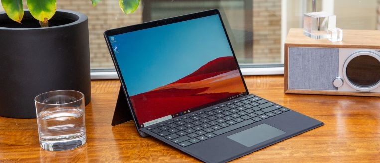

|  |
Rishab's Site
Founder and CTO of the webdev.
William Henry Gates III (born October 28, 1955) is an American business magnate, software developer, investor, and philanthropist. He is best known as the co-founder of Microsoft Corporation.[2][3] During his career at Microsoft, Gates
held the
positions of chairman, chief executive officer (CEO), president and chief software architect, while also being the largest individual shareholder until May 2014. He is one of the best-known entrepreneurs and pioneers of the microcomputer
revolution of the 1970s and 1980s.
|